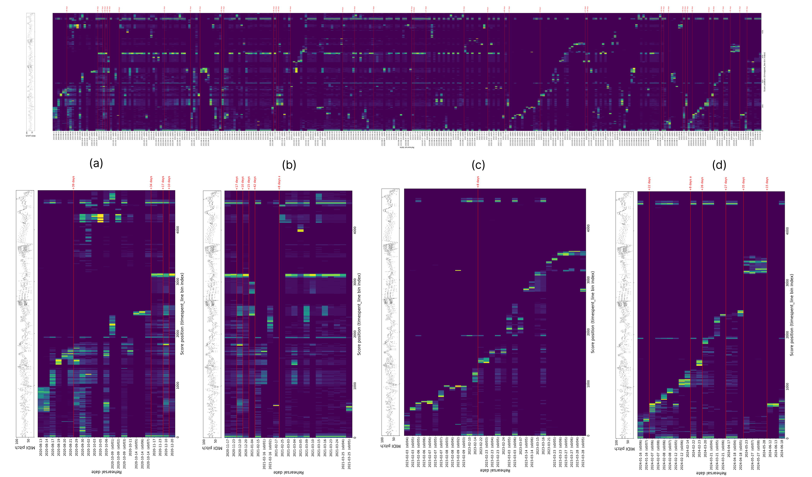

In this section, we present a potential application of alignment to study how rehearsal structure evolves over time. (This text is essentially the same as Section 7 of the paper, reproduced here for the reader's convenience.)

Figure 2. Heatmap of the relative focus placed on different score segments across 298 rehearsals of the first movement of Rachmaninoff's Third Piano Concerto. The x-axis indicates the date of each rehearsal; the y-axis represents score coverage. Heatmap intensity reflects repetition frequency. Red vertical lines mark gaps of seven or more days between sessions. Labels (a)–(d) indicate distinct phases of rehearsal behaviour discussed in the text.
🔍 Click to enlargeFigure 2. Heatmap of the relative focus placed on different score segments across 298 rehearsals of the first movement of Rachmaninoff's Third Piano Concerto.
The figure shows a heatmap of the relative focus placed on different score segments across 298 rehearsals of the first movement of Rachmaninoff's Third Piano Concerto (top plot). The x-axis indicates the date of each rehearsal, while the y-axis represents the portions of the score covered. The heatmap intensity reflects repetition frequency at each score time. Each column corresponds to an individual rehearsal recording (with multiple recordings sometimes occurring on the same day), and gaps of seven or more days between sessions are marked by red vertical lines.
This type of diagram provides a longitudinal view of a pianist's practice behavior, revealing learning strategies and consistency. In (a), early rehearsals show broad exploration of the score, which characterizes initial familiarization. Following a break in rehearsal, (b) indicates a shift toward focused practice on a specific segment, while still revisiting other regions. The underlying motivation for returning to this segment (e.g., technical challenges or expressive refinement) remains ambiguous from the heatmap alone. In (c), the player adopts a more linear progression, with each rehearsal targeting a highly localized section. A similar linear trend appears in (d), though with slightly broader high-activation regions per session, suggesting the slight widening of focused practice to relatively broader regions in the score. However, the later jumps of focused practice to other blocks of the score region complicates this interpretation of linear progression in rehearsal.
These observations highlight the limitations of segment-level analyses, which capture global rehearsal structure but lack fine-grained insights that can provide a better understanding of practice behaviors. Note-level alignment, as proposed in this work, addresses these limitations by enabling more reliable correspondence between performance and score. This facilitates both robust large-scale analysis and finer-grained insights into practice behavior.